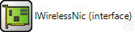
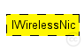
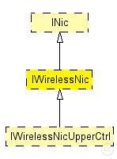

This documentation is released under the Creative Commons license
This documentation is released under the Creative Commons license(no description)
The following diagram shows usage relationships between types. Unresolved types are missing from the diagram. Click here to see the full picture.
The following diagram shows inheritance relationships for this type. Unresolved types are missing from the diagram. Click here to see the full picture.
| Name | Type | Description |
|---|---|---|
| INic | module interface | (no description) |
| Name | Type | Description |
|---|---|---|
| IWirelessNicUpperCtrl | module interface | (no description) |
| Name | Value | Description |
|---|---|---|
| display | i=block/ifcard |
moduleinterface IWirelessNic extends INic { parameters: @display("i=block/ifcard"); gates: input radioIn @labels(AirFrame); // to receive AirFrames }
This documentation is released under the Creative Commons license